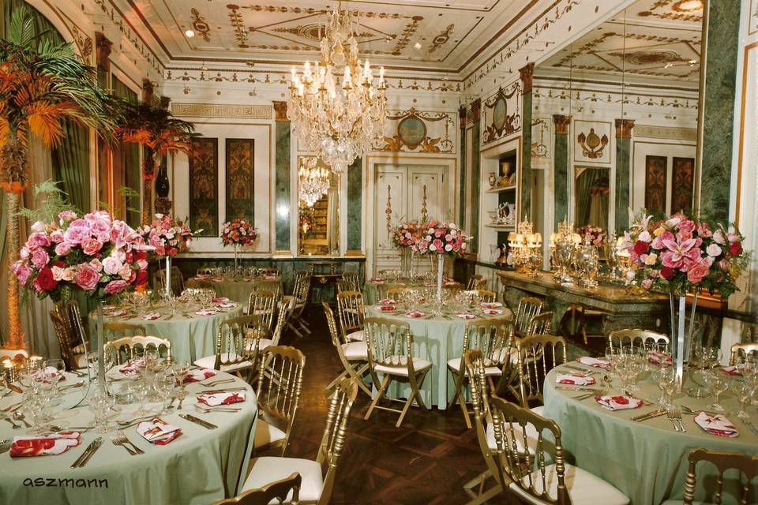
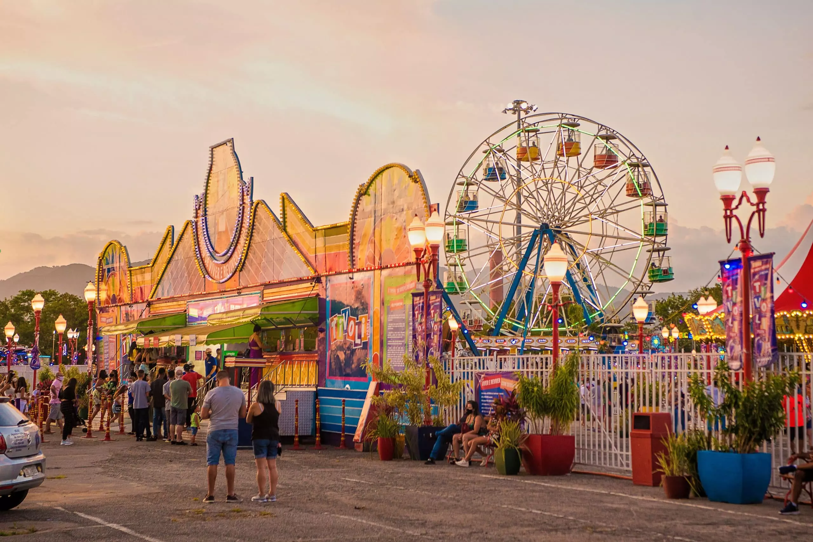

disney
Eu visitei 16 de junho de 2023
Eu amo a disney pois os parques são enormes e divertidos, adoro conhecer os personagens como o mickey, Minie,Margarida entre outros
Pretendo visitar
Somos um elegante e charmoso restaurante. Fizemos questão de manter os deslumbrantes traços do passado em nossa decoração, porém possuímos uma cozinha contemporânea.
Eu visitei 30 de agosto de 2022
O parque conta com atrações para toda a família, em diferentes níveis de adrenalina, tendo como estrelas principais a maior montanha-russa itinerante da América Latina, a Looping Star e a maior autopista de bate-bate do Rio.
Eu adorei o filme. Você tem que estar por dentro da história, senão vai perder boa parte da diversão. A sequência certa para assistir é: a Guerra infinita, Guerra civil, Pantera negra, A era de Ultron, Homem formiga e a vespa antes de assistir Vingadores: Ultimato. O filme tem várias homenagens a outros filmes da Marvel. Você vai gostar bastante. Logo no começo do filme (cuidado com o spoiler) tem uma cena degolamento incrível.O filme conta como os vingadores se juntaram mais uma vez para reverter as ações de Thanos e trazer paz para o universo. O filme é extenso😁.
Ana Botafogo, é Primeira Bailarina do Ballet do Theatro Municipal do Rio de Janeiro. Nasceu no Rio de Janeiro, onde começou desde criança seus estudos de balé. Iniciou sua carreira profissional na França integrando o Ballet de Marseille, de Roland Petit. Participou de Festivais em Lausanne, Veneza, Havana e na Gala Iberoamericana de La Danza, representando o Brasil em Madri. Foi Bailarina Principal do Teatro Guaíra e da Associação de Ballet do RJ. Em 1981, ingressou no Theatro Municipal do Rio de Janeiro já como Primeira Bailarina cargo em que permanece até hoje.